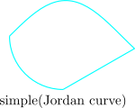

5.11 Practice Problems
Problem 5.1. Determine explicitly the largest disc about the origin on which the mapping \(f(z) = z^{2} - 2z\) is one-to-one. Justify your answer.
Show solution
Solution. Suppose \(f(z_1) = f(z_2)\). Then \[z_1^2 - 2z_1 = z_2^2 - 2z_2 \ \Longrightarrow \ (z_1-z_2)(z_1+z_2-2) = 0,\] so for distinct \(z_1, z_2\) the failure of injectivity is exactly the condition \[z_1 + z_2 = 2 .\]
If \(\left |z_1\right | < r\) and \(\left |z_2\right | < r\) then \(\left |z_1+z_2\right | < 2r\), so \(z_1 + z_2 = 2\) is impossible once \(2r \leq 2\), that is \(r \leq 1\). Hence \(f\) is one-to-one on \(\left |z\right | < 1\).
The bound is sharp. For any \(r > 1\) put \[z_1 = 1 + \varepsilon ,\qquad z_2 = 1 - \varepsilon , \qquad 0 < \varepsilon < r - 1 .\] Both lie in \(\left |z\right | < r\), they are distinct, and they sum to \(2\), so \(f(z_1) = f(z_2)\). Thus no larger disc will do and \[\boxed {\left |z\right | < 1}\] is the largest.
Note where the critical point sits: \(f'(z) = 2z - 2\) vanishes at \(z = 1\), exactly on the boundary of the answer. That is no accident — \(f\) cannot be injective on any open set containing a zero of \(f'\) — but \(f' \neq 0\) is not by itself sufficient for injectivity, which is why the argument above is done directly.
Problem 5.2. Given a Möbius transformation \(T(z) = \frac {az + b}{cz + d}\), determine necessary and sufficient conditions on \(a, b, c, d\) so that \(T\) maps the domain \(D = \{z : \operatorname {Re}(z) > 0\}\) onto \(G = \{z : \operatorname {Re}(z) < 0\}\).
Show solution
Solution. Reduce to a half-plane statement that is already known. A Möbius transformation with real coefficients maps the upper half plane onto itself when \(ad - bc > 0\) and onto the lower half plane when \(ad - bc < 0\).
The right half plane is carried to the upper half plane by \(w = iz\). So put \[S(w) = i\,T(-iw),\] which maps the upper half plane onto the upper half plane precisely when \(T\) maps the right half plane onto the lower – rotated copy; carrying the rotations through, \(T\) maps \(\operatorname {Re}z > 0\) onto \(\operatorname {Re}z < 0\) exactly when \(S\) maps the upper half plane onto the lower one. Computing \(S\), \[S(w) = \frac {i\big (a(-iw)+b\big )}{c(-iw)+d} = \frac {aw + ib}{-icw + d},\] so its coefficients are \(A = a\), \(B = ib\), \(C = -ic\), \(D = d\), and \[AD - BC = ad - (ib)(-ic) = ad - bc .\]
The condition on \(S\) is that \(A, B, C, D\) be real and \(AD - BC < 0\). Translating back:
\(T\) maps \(\operatorname {Re}z>0\) onto \(\operatorname {Re}z<0\) if and only if, after multiplying \(a,b,c,d\) by a suitable non-zero constant, \[a,\ d \ \text { are real},\qquad b,\ c \ \text { are purely imaginary}, \qquad ad - bc < 0 .\]
Writing \(b = i\beta \) and \(c = i\gamma \) with \(\beta ,\gamma \) real, the determinant condition reads \(ad + \beta \gamma < 0\).
Two checks. \(T(z) = -z\) has \((a,b,c,d) = (-1,0,0,1)\): real, purely imaginary, \(ad-bc = -1 < 0\), and indeed it sends the right half plane to the left. \(T(z) = 1/z\) has \(b = 1\), which is not purely imaginary, so it is excluded — and correctly so, since \(\operatorname {Re}(1/z) = \operatorname {Re}(z)/\left |z\right |^2\) has the same sign as \(\operatorname {Re}z\) and \(1/z\) preserves the right half plane. The determinant alone would not have caught this: \(1/z\) also has \(ad - bc = -1\).
- (a).
- Determine a Möbius transformation mapping the upper half of the unit disc onto the first quadrant.
- (b).
- Find a conformal map taking the part of the unit disc in the first quadrant one-to-one and onto the upper half plane. Give the algebraic expression of the map.
Show solution
Solution. (a). The upper half-disc is bounded by the segment \([-1,1]\) and the upper unit semicircle, which meet at right angles at \(\pm 1\). A Möbius map preserves angles and takes circles-or-lines to circles-or-lines, so to reach the first quadrant — bounded by two rays meeting at a right angle at \(0\) — the two corners must go to \(0\) and \(\infty \). Take \[T(z) = \frac {1+z}{1-z},\qquad T(-1) = 0,\quad T(1) = \infty .\]
On the diameter, \(z = x \in (-1,1)\) gives \(T(x) = \frac {1+x}{1-x} > 0\): the positive real axis. On the semicircle, \(z = e^{i\theta }\) with \(\theta \in (0,\pi )\), \[T(e^{i\theta }) = \frac {e^{i\theta /2}\big (e^{-i\theta /2}+e^{i\theta /2}\big )} {-e^{i\theta /2}\big (e^{i\theta /2}-e^{-i\theta /2}\big )} = \frac {2\cos (\theta /2)}{-2i\sin (\theta /2)} = i\cot \frac {\theta }{2},\] which is positive imaginary. So the boundary goes to the boundary of the first quadrant, and testing one interior point, \(T(i/2) = 0.6 + 0.8i\), fixes the image as the quadrant itself.
(b). The region is the quarter-disc \(\{\left |z\right |<1,\ \operatorname {Re}z>0,\ \operatorname {Im}z>0\}\). Compose three maps: \[z \ \overset {z^2}{\longmapsto }\ \text {upper half-disc} \ \overset {(1+w)/(1-w)}{\longmapsto }\ \text {first quadrant} \ \overset {(\cdot )^2}{\longmapsto }\ \text {upper half plane}.\] Squaring doubles the angle at the corner \(0\) and leaves the modulus below \(1\), so the first step is onto the upper half-disc; the second is part (a); the third doubles the quadrant into a half plane. Hence \[\boxed {f(z) = \left (\frac {1+z^2}{1-z^2}\right )^{2}}\] is one-to-one from the quarter-disc onto the upper half plane. (Each stage is injective on the region it is applied to, which is what makes the composite injective — \(z \mapsto z^2\) is not injective on the disc, but it is on a quarter of it.)
- (a).
- Show that if \(f : \mathbb {C} \rightarrow \mathbb {C}\) is analytic then \(f\) is a conformal map at \(z_0\) whenever \(f'(z_0) \neq 0\).
- (b).
- Construct explicitly a conformal map from the open first quadrant to the interior of the disc centred at the origin with radius \(2\).
Show solution
Solution. (a). Let \(\gamma \) be a smooth curve with \(\gamma (0) = z_0\) and \(\gamma '(0) \neq 0\). The image curve \(f \circ \gamma \) has tangent \[\left (f\circ \gamma \right )'(0) = f'(z_0)\,\gamma '(0),\] by the chain rule, and since \(f'(z_0) \neq 0\) this is non-zero, so the image curve is smooth at \(f(z_0)\) with \[\arg \left (f\circ \gamma \right )'(0) = \arg f'(z_0) + \arg \gamma '(0).\] Every curve through \(z_0\) therefore has its tangent direction rotated by the same angle \(\arg f'(z_0)\). If two curves meet at \(z_0\) at angle \(\alpha = \arg \gamma _2'(0) - \arg \gamma _1'(0)\), their images meet at \[\big (\arg f'(z_0) + \arg \gamma _2'(0)\big ) - \big (\arg f'(z_0) + \arg \gamma _1'(0)\big ) = \alpha .\] Angles are preserved in magnitude and in sense: \(f\) is conformal at \(z_0\). \(\blacksquare \)
The hypothesis \(f'(z_0)\neq 0\) cannot be dropped. At a zero of \(f'\) of order \(k-1\) the map behaves like \(z \mapsto z^{k}\) locally and multiplies angles by \(k\).
(b). Compose: \[z \ \overset {z^2}{\longmapsto }\ \text {upper half plane} \ \overset {(w-i)/(w+i)}{\longmapsto }\ \text {unit disc} \ \overset {\times 2}{\longmapsto }\ \left |w\right | < 2 .\] Squaring opens the quadrant into a half plane; the Cayley transform \(\frac {w-i}{w+i}\) carries the upper half plane onto the unit disc; scaling gives radius \(2\). Hence \[\boxed {f(z) = 2\,\frac {z^2 - i}{z^2 + i}}\] maps the open first quadrant conformally onto \(\left |w\right | < 2\).
Problem 5.5. Consider \(f(z) = z^{3}\). Plot the images of the following four objects on the same complex plane: (a) the point \(z = 0\); (b) the point \(z = 1\); (c) the point \(z = -1\); (d) the curve shown below. Justify your answer.

Show solution
Solution. Writing \(z = re^{i\theta }\), the map \(f(z) = z^3\) sends \[r \longmapsto r^{3},\qquad \theta \longmapsto 3\theta ,\] so moduli are cubed and arguments tripled.
(a). \(z = 0 \mapsto 0\). The origin is the fixed point of every \(z^n\) and also the one point where \(f\) fails to be conformal: \(f'(0) = 0\), and angles at the origin are tripled.
(b). \(z = 1 \mapsto 1\).
(c). \(z = -1 = e^{i\pi } \mapsto e^{3i\pi } = -1\). Both \(\pm 1\) are fixed, being cube roots of themselves.
(d). The ellipse is centred on the negative real axis and, spanning roughly \(-2 \leq x \leq 0.4\), it encloses the origin. That is the decisive feature. A closed curve with winding number \(1\) about \(0\) has image under \(z^3\) with winding number \[n\big (f\circ \gamma ,\ 0\big ) = 3\,n(\gamma , 0) = 3,\] since the argument of \(\gamma (t)\) increases by \(2\pi \) over the circuit and the argument of \(\gamma (t)^3\) therefore increases by \(6\pi \).
So the image is a closed curve that loops the origin three times. It is not a simple curve: it must cross itself, because three points of the ellipse share each argument modulo \(2\pi /3\) and are carried to the same ray. Points of the ellipse near the origin — where the curve passes closest to \(0\) — are pulled in hard, since \(r \mapsto r^3\) shrinks small radii cubically, while the far end near \(x = -2\) is pushed out to modulus about \(8\).
Problem 5.6. A function \(w(z)\) is analytic in a convex domain \(D\) and \(\operatorname {Re}w'(z) > 0\) in \(D\).
- (a).
- Prove that \(w(z)\) is one-to-one in \(D\).
- (b).
- Using (a), prove that if \(w(z) = z + \displaystyle \sum ^{\infty }_{n=2} a_n z^{n}\) on \(\left |z\right | < 1\) and \(\displaystyle \sum ^{\infty }_{n=2} n\left |a_n\right | < 1\), then \(w(z)\) is one-to-one on \(\left |z\right | < 1\).
Show solution
Solution. (a). Let \(z_1 \neq z_2\) lie in \(D\). Because \(D\) is convex the segment \([z_1,z_2]\) lies in \(D\), and parametrising it by \(z(t) = z_1 + t(z_2-z_1)\), \(t \in [0,1]\), \[w(z_2) - w(z_1) = \int _{[z_1,z_2]} w'(z)\,dz = (z_2 - z_1)\int ^{1}_{0} w'\big (z_1 + t(z_2-z_1)\big )\,dt .\] Dividing by \(z_2 - z_1 \neq 0\), \[\frac {w(z_2)-w(z_1)}{z_2-z_1} = \int ^{1}_{0} w'\big (z(t)\big )\,dt,\] and taking real parts, \[\operatorname {Re}\frac {w(z_2)-w(z_1)}{z_2-z_1} = \int ^{1}_{0}\operatorname {Re}w'\big (z(t)\big )\,dt > 0,\] because the integrand is positive throughout. A number with positive real part is non-zero, so \(w(z_2) \neq w(z_1)\). \(\blacksquare \)
Convexity is what makes the segment available; on a non-convex domain the conclusion is false.
(b). Differentiating term by term inside the disc of convergence, \[w'(z) = 1 + \sum ^{\infty }_{n=2} n a_n z^{n-1}.\] For \(\left |z\right | < 1\), \[\left |\sum ^{\infty }_{n=2} n a_n z^{n-1}\right | \leq \sum ^{\infty }_{n=2} n\left |a_n\right |\left |z\right |^{n-1} < \sum ^{\infty }_{n=2} n\left |a_n\right | < 1 ,\] so \[\operatorname {Re}w'(z) \geq 1 - \left |\,w'(z) - 1\,\right | > 0 .\] The unit disc is convex, so part (a) applies and \(w\) is one-to-one on \(\left |z\right | < 1\). \(\blacksquare \)
This is a classical univalence criterion — the Noshiro–Warschawski condition — and the constant \(1\) in \(\sum n\left |a_n\right | < 1\) is sharp: the Koebe function \(\frac {z}{(1-z)^2} = z + \sum _{n\geq 2} n z^{n}\) has \(\sum n\left |a_n\right |\) divergent and is still univalent, but the criterion itself cannot be relaxed to \(\leq 1\) without further work.
Problem 5.7. Determine the largest disc about the origin whose image under \(f(z) = z^{3} + iz - 1\) is one-to-one.
Show solution
Solution. If \(f(z_1) = f(z_2)\) with \(z_1 \neq z_2\) then, since \(z_1^3 - z_2^3 = (z_1-z_2)(z_1^2+z_1z_2+z_2^2)\), \[\big (z_1-z_2\big )\big (z_1^2 + z_1z_2 + z_2^2 + i\big ) = 0 \ \Longrightarrow \ z_1^2 + z_1z_2 + z_2^2 = -i .\]
Injectivity for \(r \leq 1/\sqrt 3\). If both points lie in \(\left |z\right | < r\) then \[\left |z_1^2 + z_1z_2 + z_2^2\right | \leq 3r^{2},\] while \(\left |-i\right | = 1\). So the equation is unsolvable as soon as \(3r^2 \leq 1\), that is \(r \leq \frac {1}{\sqrt 3}\).
Sharpness. The critical points satisfy \(f'(z) = 3z^2 + i = 0\), so \[z_0^{2} = -\frac {i}{3},\qquad z_0 = \frac {1}{\sqrt 3}e^{-i\pi /4} = 0.4082 - 0.4082i, \qquad \left |z_0\right | = \frac {1}{\sqrt 3} .\] Near a simple zero of \(f'\) the map is two-to-one, so any disc of radius greater than \(\left |z_0\right |\) contains distinct points with equal images. Explicitly, writing \(z_1 = z_0 + u\) and solving \(3z_0(u+v) + (u^2+uv+v^2) = 0\) for \(v\) gives, for small \(u\) taken perpendicular to \(z_0\), a genuine pair \(z_1 \neq z_2\) with \(f(z_1) = f(z_2)\) and \(\max (\left |z_1\right |,\left |z_2\right |) \rightarrow \left |z_0\right |\) from above.
Hence \[\boxed {\left |z\right | < \frac {1}{\sqrt 3} = \frac {\sqrt 3}{3} \approx 0.5774}\] is the largest such disc.
Contrast this with Problem 1, where the critical point also sat on the boundary of the answer but the sharp bound came from an algebraic identity rather than from the critical point. Here the two coincide; in general the injectivity radius can be strictly smaller than the distance to the nearest critical point.
Questions on this section
Stuck on something here? Ask below and it stays attached to this topic.